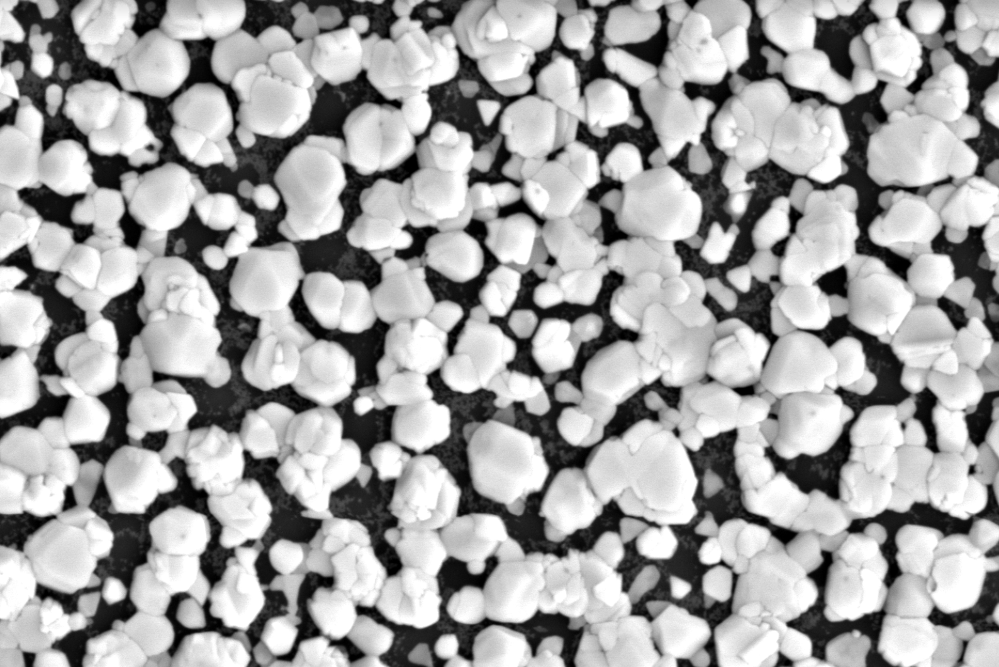

Copper Iodide for Thin Film Transistors
Transistors act as vital components of all modern electronics. They act as voltage-controlled switches that determine the flow of current through analog and digital circuits. In digital circuits, modern metal-oxide-semiconductor (MOS) transistors are made from silicon and come in two varieties: n-type or NMOS, where the current is carried by electrons, and p-type or PMOS, where the current is carried by positively charged absent electrons known as holes. When NMOS and PMOS transistors are combined into a complementary system known as CMOS, the resulting circuits can perform logic function without excess power dissipation in standby mode. As a result, CMOS circuits dominate modern digital technology.
Display technology requires a different type of transistor, known as a thin film transistor (TFT). These TFTs can be deposited on arbitrary substrates, like glass. In the past, TFTs were made from amorphous silicon, which has a low electron mobility of less than 1 cm^2 /V s, which makes them relatively inefficient. Modern TFTs are made from various metal oxides, like indium-zinc- oxide or indium-gallium-zinc-oxide. These materials provide n-type transistors with higher electron mobility of up ~10 cm^2 /V s. However, p-type TFTs have never been created at a commercially viable scale. Copper oxide has been widely researched as a material for this purpose, however, recent studies show that copper iodide (CuI) may be a more promising candidate material for this application. Further it has been proposed that the addition of tin may keep the CuI film amorphous3, resulting in even higher electron mobility. If a successful p-type CuI-based TFT can be demonstrated, there is hope of combining it with a zinc-oxide n-type TFT to produce a complementary TFT system.